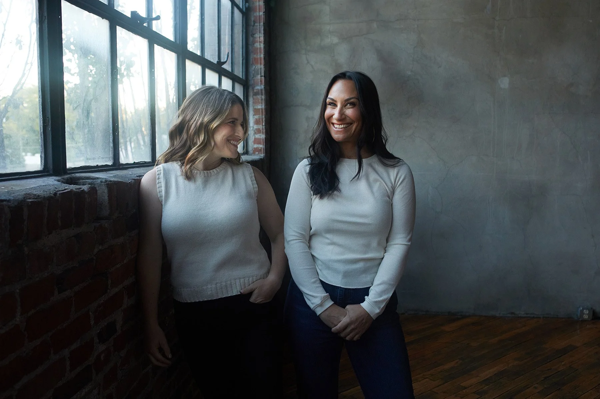
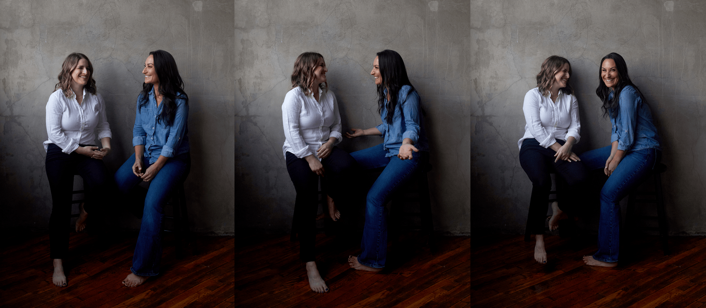
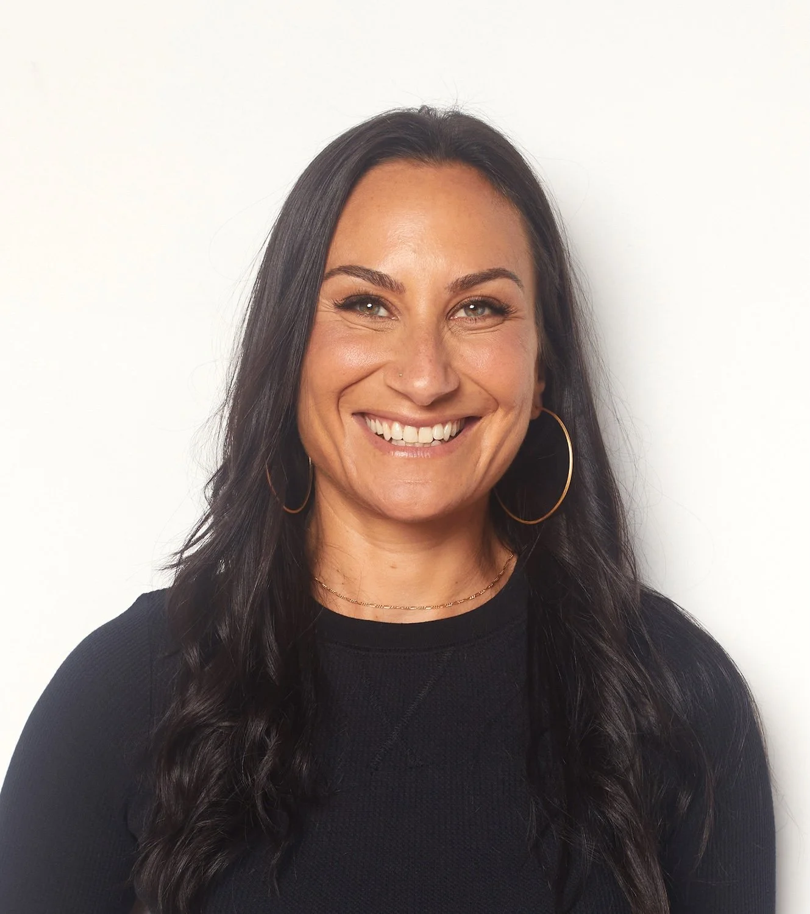
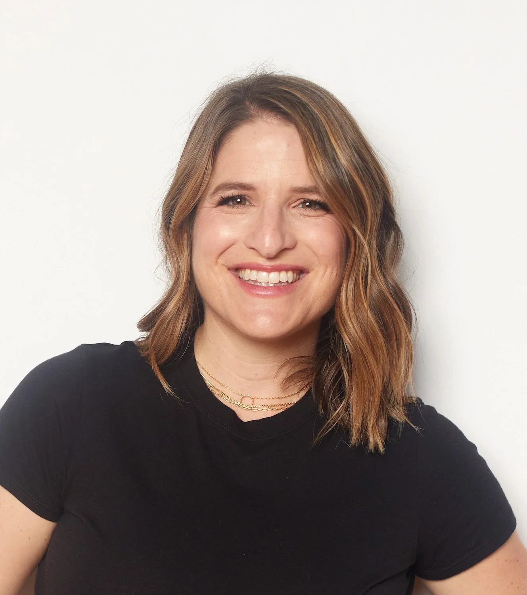
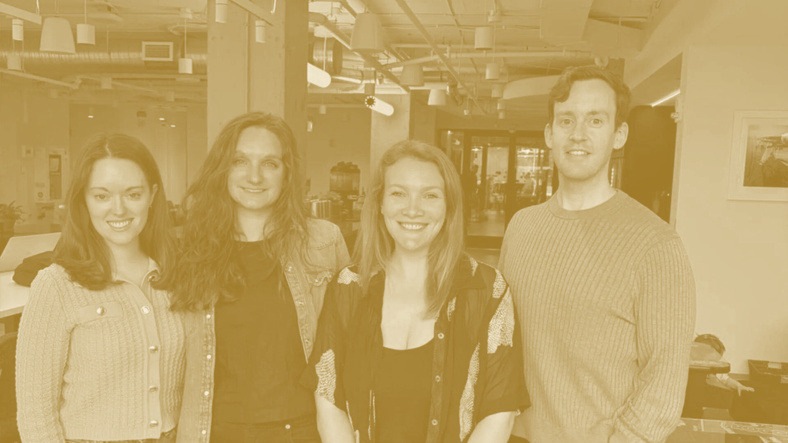
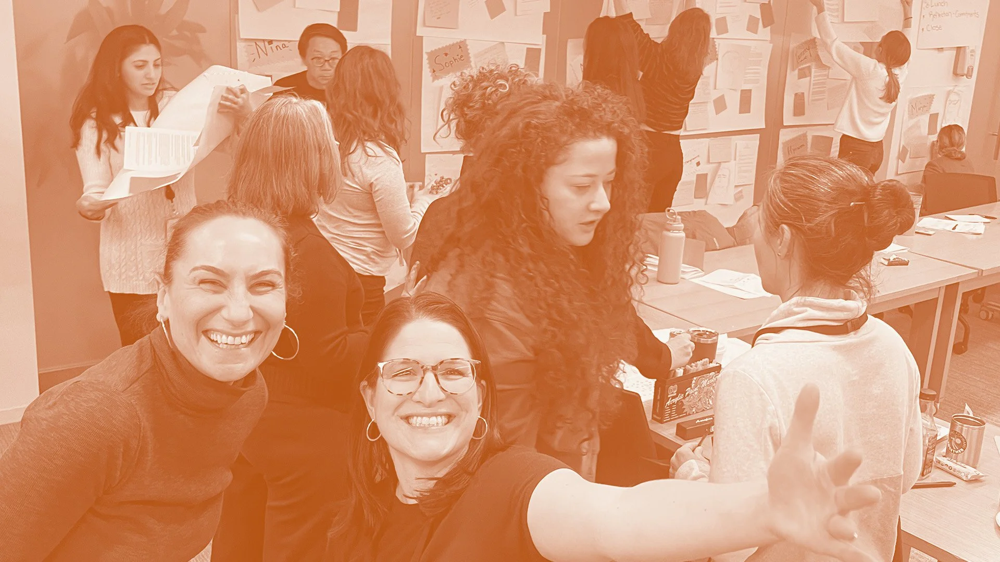
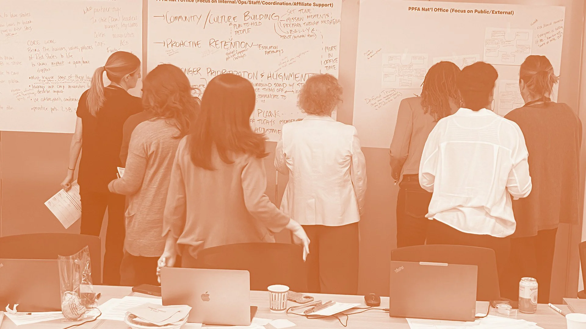

The faces
behind the work.
Approved portraits of Jenna and Stacy — for proposals, press, decks, and bios. Warm, candid, and unmistakably them.
Lead image
The window portrait is the primary lead image — used at the top of the website, in proposal covers, and on press features. Soft natural light, candid posture, slight asymmetry. Use full-bleed wherever space allows.

Together
Use these for any context that introduces WBT as a partnership — about pages, founder bios, podcast features, conference intros. Always pair them; their dynamic is the brand.


Individuals
Solo portraits for bios, byline photos, and speaker cards. Both shot against soft white — pair them visually as a set, even when used apart.


Show up the way
we actually work.
These photos earn the brand its warmth. Use them generously — but use them as shot. Don’t crop into one person from a duo image, don’t recolor, don’t overlay heavy filters.
Use full-bleed where space allows. The compositions are intentional — let them breathe.
Pair duo images with brand watercolor backgrounds or Calm Blue fields for editorial layouts.
Crop a duo into a single person, flip horizontally, or apply duotone or heavy color treatments to these portraits — tinting is for supporting case-study imagery only (see Photo tinting below).
Use unapproved candids, Zoom screenshots, or older photography — request new shots if these don’t fit.
Photo tinting · Duotone
The one deliberate exception to “use photos as shot.” Supporting photography — case-study thumbnails, session and client photos, editorial context shots — is rendered as a duotone keyed to the service colorway: shadows in the service’s dark ink, highlights in cream. It unifies a grid of mismatched source photos into one brand system and instantly signals which kind of work a story is about. This applies to contextual imagery only — the approved founder portraits above stay full-colour, as shot.



One colorway
per service.
Leadership → Radiant Gold, Team → Intentional Blue, Facilitation → Honest Ochre. Steady Blue and Clean Slate are available for extended or archival stories. The duotone is baked into the asset, not a live filter.
Tint case-study thumbnails and contextual session photos to their service colorway so the grid reads as one system.
Keep enough tonal range that faces stay legible. On a light tint (gold), flip any overlaid type to ink for contrast (.tint-light).
On solid-color case-study heroes, pre-darken the base (e.g. gold #856226, team #4860c8, facilitation #a15324) so cream text clears WCAG.
Duotone the founder portraits, or mix a service’s photo with another service’s colorway.
Picking the right portrait
Hero & cover
Window portrait. Lead image for proposals, site, and press kits — wherever WBT is being introduced.
Editorial & long-form
Floor portrait or triptych. For features, retrospectives, interviews, and any storytelling format.
Bios & bylines
Solo headshots. Speaker cards, author bios, LinkedIn, and contributor footers — paired as a set.